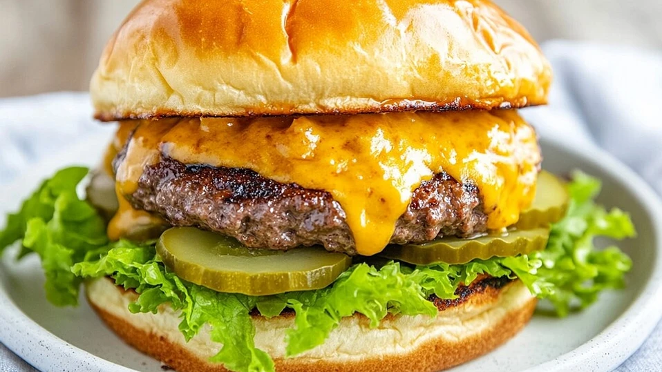

Burger

This is a cheeseburger recipe. It's made with brioche buns, cheddar cheese and pickles.
Ingredients:
- Brioche buns
- Cheddar cheese
- Ground beef
- Lettuce
- Pickles
- Homemade Mayonnaise
Steps:
- Preheat the pan to medium-high heat.
- Form the ground beef into patties and season with salt and pepper.
- Cook the patties for 4-5 minutes on each side, or until cooked to your liking.
- Toast the brioche buns in the pan for 1-2 minutes.
- Assemble the burgers with lettuce, pickles, cheese, and mayonnaise.
Back to home